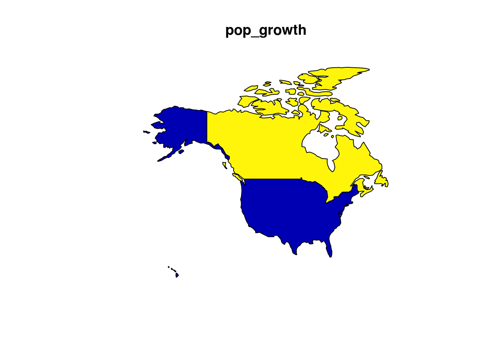

3 Attribute data operations
Prerequisites
- This chapter requires tidyverse, sf, and spData packages:
library(sf)
library(tidyverse)- You must have loaded the
worldandworldbank_dfdata from the spData package:
library(spData)
data("world")
data("worldbank_df")3.1 Introduction
Attribute data is non-geographic information associated with geographical data. In the context of simple features, introduced in the previous chapter, this means a tabular data joined onto the geometry variables of sf objects. This structure enables multiple columns to represent a range of attributes for thousands of features (one row per feature).
There is a strong overlap between geographical and non-geographical operations: non-spatial subset, aggregate and join operations each have their geographical equivalents. For this reason this chapter provides the foundation for next (chapter 4). The two chapters share the same structure and input data; it is recommended that they are read together.
The non-spatial versions of these methods are common and easy to understand with R, so they are covered first. The methods are largely cross-transferable to the trickier tasks of spatial data operations, so pay attention!
Simple features are represented as objects, such as world, with class sf in the sf package:
class(world)
#> [1] "sf" "data.frame"The output shows that sf objects have two classes (sf and data.frame), meaning that are essentially data frames. Using data frames, the basic class used for data analysis in R, particularly within the tidyverse package ecosystem, has many advantages when it comes to attribute data operations. It means that all the accumulated know-how in the R community for handling data frames to be applied to geographic data which contain attributes.
This ‘world’ dataset contains 63 non-geographical variables (and one geometry column) with data for almost 200 countries, as can be ascertained using base functions for working with tabular data:
dim(world) # it is a 2 dimensional object, with rows and columns
#> [1] 177 11
nrow(world) # how many rows?
#> [1] 177
ncol(world) # how many columns?
#> [1] 11Extracting the attribute data of an sf object is the same as removing the geometry column:
world_df = world
st_geometry(world_df) = NULL
class(world_df)
#> [1] "data.frame"This can be useful if the geometry column causes problem, e.g. by occupying large amounts of RAM. However, for most cases there is no harm in keeping the geometry column, as data frame operations on sf will only act on the attribute data. For this reason, being good at working with attribute data in geographic data is the same being proficient at handling data frames in R. For many applications, the most effective and intuitive way to work with data frames is with the dplyr package.
3.2 Base vs data.table vs dplyr
Simple feature objects of class sf behave exactly the same as data.frame objects for most base R operations. Unlike objects of class Spatial defined by the sp package, sf objects are also compatible with dplyr and data.table packages. This is an advantage because they provide fast functions for data manipulation.
Which method you use is largely a matter of preference. In this chapter the focus is largely on dplyr because of it’s intuitive function names and its ability to perform multiple chained operations using the pipe operator. The important thing is that you select a data processing paradigm of choice, and master it.
3.3 Attribute subsetting
world[1:6, ] # subset rowsworld[, 1:3] # subset columnsAfter each operation, the geometry column is preserved.
dplyr makes working with data frames easier and is compatible with sf objects, after the package has been loaded:
The select() function, for example, can be used to both subset and renames columns in a single line, for example:
world1 = select(world, name_long, continent, population = pop)
head(world1, n = 2)
#> Simple feature collection with 2 features and 3 fields
#> geometry type: MULTIPOLYGON
#> dimension: XY
#> bbox: xmin: 11.6401 ymin: -17.93064 xmax: 75.15803 ymax: 38.48628
#> epsg (SRID): 4326
#> proj4string: +proj=longlat +datum=WGS84 +no_defs
#> name_long continent population geom
#> 1 Afghanistan Asia 31627506 MULTIPOLYGON(((61.210817091...
#> 2 Angola Africa 24227524 MULTIPOLYGON(((16.326528354...This is more concises than the base R equivalent (which saves the result as an object called world2 to avoid overriding the world dataset created previously):
world2 = world[c("name_long", "continent", "pop")] # subset columns by name
names(world2)[3] = "population" # rename column manuallyThe pipe operator (%>%), which passes the output of one function into the first argument of the next function, is commonly used in dplyr data analysis workflows. This works because the fundamental dplyr functions (or ‘verbs’, like select()) all take a data frame object in and spit a data frame object out. Combining many functions together with pipes is called chaining or piping. The advantage over base R for complex data processing operations is that this approach prevents nested functions and is easy to read because there is a clear order and modularity to the work (a piped command can be commented out, for example).
The example below shows yet another way of creating the renamed world dataset, using the pipe operator:
world3 = world %>%
select(name_long, continent)Note that this can also be written without the pipe operator because, in the above code, the world object is simply ‘piped’ into the first argument of select(). The equivalent dplyr code without the pipe operator is:
world4 = select(world, name_long, continent)The pipe operator can be used for many data processing tasks with attribute data:
# Filtering attribute data with dplyr
world %>%
filter(pop > 1e9)
#> Simple feature collection with 2 features and 10 fields
#> geometry type: MULTIPOLYGON
#> dimension: XY
#> bbox: xmin: -180 ymin: -90 xmax: 180 ymax: 83.64513
#> epsg (SRID): 4326
#> proj4string: +proj=longlat +datum=WGS84 +no_defs
#> iso_a2 name_long continent region_un subregion type
#> 1 CN China Asia Asia Eastern Asia Country
#> 2 IN India Asia Asia Southern Asia Sovereign country
#> area_km2 pop lifeExp gdpPercap geom
#> 1 9409832 1.36e+09 75.8 12759 MULTIPOLYGON(((110.33918786...
#> 2 3142892 1.30e+09 68.0 5392 MULTIPOLYGON(((77.837450799...This is equivalent to the following base R code (not run to preserve the NAs):4
# subsetting simple feature rows by values
world$pop[is.na(world$pop)] = 0 # set NAs to 0
world_few_rows = world[world$pop > 1e9,]3.4 Attribute data aggregation
# data summary (not shown)
summary(world)
# data summary by groups (not shown)
world_continents = world %>%
group_by(continent) %>%
summarise(pop = sum(pop, na.rm = TRUE), country_n = n())
world_continents# sort variables
## by name
world_continents %>%
arrange(continent)
#> Simple feature collection with 8 features and 3 fields
#> geometry type: GEOMETRY
#> dimension: XY
#> bbox: xmin: -180 ymin: -90 xmax: 180 ymax: 83.64513
#> epsg (SRID): 4326
#> proj4string: +proj=longlat +datum=WGS84 +no_defs
#> # A tibble: 8 x 4
#> continent pop country_n geom
#> <chr> <dbl> <int> <simple_feature>
#> 1 Africa 1.15e+09 51 <MULTIPOLYGON...>
#> 2 Antarctica 0.00e+00 1 <MULTIPOLYGON...>
#> 3 Asia 4.31e+09 47 <MULTIPOLYGON...>
#> 4 Europe 7.39e+08 39 <MULTIPOLYGON...>
#> # ... with 4 more rows
## by population (in descending order)
world_continents %>%
arrange(-pop)
#> Simple feature collection with 8 features and 3 fields
#> geometry type: GEOMETRY
#> dimension: XY
#> bbox: xmin: -180 ymin: -90 xmax: 180 ymax: 83.64513
#> epsg (SRID): 4326
#> proj4string: +proj=longlat +datum=WGS84 +no_defs
#> # A tibble: 8 x 4
#> continent pop country_n geom
#> <chr> <dbl> <int> <simple_feature>
#> 1 Asia 4.31e+09 47 <MULTIPOLYGON...>
#> 2 Africa 1.15e+09 51 <MULTIPOLYGON...>
#> 3 Europe 7.39e+08 39 <MULTIPOLYGON...>
#> 4 North America 5.65e+08 18 <MULTIPOLYGON...>
#> # ... with 4 more rows3.5 Attribute data joining
north_america = world %>%
filter(subregion == "Northern America") %>%
select(iso_a2, name_long)
plot(north_america[0])
wb_north_america = worldbank_df %>%
filter(name %in% c("Canada", "Mexico", "United States"))3.5.1 Left joins
left_join1 = north_america %>%
left_join(wb_north_america, by = "iso_a2")
left_join1
#> Simple feature collection with 3 features and 8 fields
#> geometry type: MULTIPOLYGON
#> dimension: XY
#> bbox: xmin: -171.7911 ymin: 18.91619 xmax: -12.20855 ymax: 83.64513
#> epsg (SRID): 4326
#> proj4string: +proj=longlat +datum=WGS84 +no_defs
#> iso_a2 name_long name HDI urban_pop unemployment pop_growth
#> 1 CA Canada Canada NA 29022137 6.91 1.101
#> 2 GL Greenland <NA> NA NA NA NA
#> 3 US United States United States NA 259740511 6.17 0.781
#> literacy geom
#> 1 NA MULTIPOLYGON(((-63.6645 46....
#> 2 NA MULTIPOLYGON(((-46.76379 82...
#> 3 NA MULTIPOLYGON(((-155.54211 1...
plot(left_join1["pop_growth"])
left_join2 = north_america %>%
left_join(wb_north_america, by = c("name_long" = "name"))
left_join2
#> Simple feature collection with 3 features and 8 fields
#> geometry type: MULTIPOLYGON
#> dimension: XY
#> bbox: xmin: -171.7911 ymin: 18.91619 xmax: -12.20855 ymax: 83.64513
#> epsg (SRID): 4326
#> proj4string: +proj=longlat +datum=WGS84 +no_defs
#> iso_a2.x name_long iso_a2.y HDI urban_pop unemployment pop_growth
#> 1 CA Canada CA NA 29022137 6.91 1.101
#> 2 GL Greenland <NA> NA NA NA NA
#> 3 US United States US NA 259740511 6.17 0.781
#> literacy geom
#> 1 NA MULTIPOLYGON(((-63.6645 46....
#> 2 NA MULTIPOLYGON(((-46.76379 82...
#> 3 NA MULTIPOLYGON(((-155.54211 1...left_join3 = north_america %>%
left_join(wb_north_america, by = c("iso_a2", "name_long" = "name"))
left_join3
#> Simple feature collection with 3 features and 7 fields
#> geometry type: MULTIPOLYGON
#> dimension: XY
#> bbox: xmin: -171.7911 ymin: 18.91619 xmax: -12.20855 ymax: 83.64513
#> epsg (SRID): 4326
#> proj4string: +proj=longlat +datum=WGS84 +no_defs
#> iso_a2 name_long HDI urban_pop unemployment pop_growth literacy
#> 1 CA Canada NA 29022137 6.91 1.101 NA
#> 2 GL Greenland NA NA NA NA NA
#> 3 US United States NA 259740511 6.17 0.781 NA
#> geom
#> 1 MULTIPOLYGON(((-63.6645 46....
#> 2 MULTIPOLYGON(((-46.76379 82...
#> 3 MULTIPOLYGON(((-155.54211 1...# error
left_join4 = wb_north_america %>%
left_join(north_america, by = c("iso_a2"))
left_join4
#> name iso_a2 HDI urban_pop unemployment pop_growth literacy
#> 1 Canada CA NA 29022137 6.91 1.101 NA
#> 2 Mexico MX NA 99018446 5.25 1.321 94.6
#> 3 United States US NA 259740511 6.17 0.781 NA
#> name_long geom
#> 1 Canada MULTIPOLYGON(((-63.6645 46....
#> 2 <NA> NULL
#> 3 United States MULTIPOLYGON(((-155.54211 1...3.5.2 Right joins
# error
right_join1 = north_america %>%
right_join(wb_north_america, by = "iso_a2") #%>% plot()
right_join1
#> Simple feature collection with 3 features and 8 fields (of which 1 is empty)
#> geometry type: GEOMETRY
#> dimension: XY
#> bbox: xmin: -171.7911 ymin: 18.91619 xmax: -52.6481 ymax: 83.23324
#> epsg (SRID): 4326
#> proj4string: +proj=longlat +datum=WGS84 +no_defs
#> iso_a2 name_long name HDI urban_pop unemployment pop_growth
#> 1 CA Canada Canada NA 29022137 6.91 1.101
#> 2 MX <NA> Mexico NA 99018446 5.25 1.321
#> 3 US United States United States NA 259740511 6.17 0.781
#> literacy geom
#> 1 NA MULTIPOLYGON(((-63.6645 46....
#> 2 94.6 GEOMETRYCOLLECTION()
#> 3 NA MULTIPOLYGON(((-155.54211 1...# error
right_join2 = wb_north_america %>%
right_join(north_america, by = "iso_a2") #%>% plot()
right_join2
#> name iso_a2 HDI urban_pop unemployment pop_growth literacy
#> 1 Canada CA NA 29022137 6.91 1.101 NA
#> 2 <NA> GL NA NA NA NA NA
#> 3 United States US NA 259740511 6.17 0.781 NA
#> name_long geom
#> 1 Canada MULTIPOLYGON(((-63.6645 46....
#> 2 Greenland MULTIPOLYGON(((-46.76379 82...
#> 3 United States MULTIPOLYGON(((-155.54211 1...3.5.3 Inner joins
inner_join1 = north_america %>%
inner_join(wb_north_america, by = "iso_a2")
inner_join1
#> Simple feature collection with 2 features and 8 fields
#> geometry type: MULTIPOLYGON
#> dimension: XY
#> bbox: xmin: -171.7911 ymin: 18.91619 xmax: -52.6481 ymax: 83.23324
#> epsg (SRID): 4326
#> proj4string: +proj=longlat +datum=WGS84 +no_defs
#> iso_a2 name_long name HDI urban_pop unemployment pop_growth
#> 1 CA Canada Canada NA 29022137 6.91 1.101
#> 2 US United States United States NA 259740511 6.17 0.781
#> literacy geom
#> 1 NA MULTIPOLYGON(((-63.6645 46....
#> 2 NA MULTIPOLYGON(((-155.54211 1...
plot(inner_join1["pop_growth"])
# error
inner_join2 = wb_north_america %>%
inner_join(north_america, by = "iso_a2")
inner_join2
#> name iso_a2 HDI urban_pop unemployment pop_growth literacy
#> 1 Canada CA NA 29022137 6.91 1.101 NA
#> 2 United States US NA 259740511 6.17 0.781 NA
#> name_long geom
#> 1 Canada MULTIPOLYGON(((-63.6645 46....
#> 2 United States MULTIPOLYGON(((-155.54211 1...3.5.4 Full joins
# error
full_join1 = north_america %>%
full_join(wb_north_america, by = "iso_a2") #%>% plot()
full_join1
#> Simple feature collection with 4 features and 8 fields (of which 1 is empty)
#> geometry type: GEOMETRY
#> dimension: XY
#> bbox: xmin: -171.7911 ymin: 18.91619 xmax: -12.20855 ymax: 83.64513
#> epsg (SRID): 4326
#> proj4string: +proj=longlat +datum=WGS84 +no_defs
#> iso_a2 name_long name HDI urban_pop unemployment pop_growth
#> 1 CA Canada Canada NA 29022137 6.91 1.101
#> 2 GL Greenland <NA> NA NA NA NA
#> 3 US United States United States NA 259740511 6.17 0.781
#> 4 MX <NA> Mexico NA 99018446 5.25 1.321
#> literacy geom
#> 1 NA MULTIPOLYGON(((-63.6645 46....
#> 2 NA MULTIPOLYGON(((-46.76379 82...
#> 3 NA MULTIPOLYGON(((-155.54211 1...
#> 4 94.6 GEOMETRYCOLLECTION()
# error
full_join2 = wb_north_america %>%
full_join(north_america, by = "iso_a2") #%>% plot()
full_join2
#> name iso_a2 HDI urban_pop unemployment pop_growth literacy
#> 1 Canada CA NA 29022137 6.91 1.101 NA
#> 2 Mexico MX NA 99018446 5.25 1.321 94.6
#> 3 United States US NA 259740511 6.17 0.781 NA
#> 4 <NA> GL NA NA NA NA NA
#> name_long geom
#> 1 Canada MULTIPOLYGON(((-63.6645 46....
#> 2 <NA> NULL
#> 3 United States MULTIPOLYGON(((-155.54211 1...
#> 4 Greenland MULTIPOLYGON(((-46.76379 82...3.5.5 Semi joins
semi_join1 = north_america %>%
semi_join(wb_north_america, by = "iso_a2")
semi_join1
#> Simple feature collection with 2 features and 2 fields
#> geometry type: MULTIPOLYGON
#> dimension: XY
#> bbox: xmin: -171.7911 ymin: 18.91619 xmax: -52.6481 ymax: 83.23324
#> epsg (SRID): 4326
#> proj4string: +proj=longlat +datum=WGS84 +no_defs
#> iso_a2 name_long geom
#> 1 CA Canada MULTIPOLYGON(((-63.6645 46....
#> 2 US United States MULTIPOLYGON(((-155.54211 1...
semi_join2 = wb_north_america %>%
semi_join(north_america, by = "iso_a2")
semi_join2
#> name iso_a2 HDI urban_pop unemployment pop_growth literacy
#> 1 Canada CA NA 29022137 6.91 1.101 NA
#> 2 United States US NA 259740511 6.17 0.781 NA3.5.6 Anti joins
anti_join1 = north_america %>%
anti_join(wb_north_america, by = "iso_a2")
anti_join1
#> Simple feature collection with 1 feature and 2 fields
#> geometry type: MULTIPOLYGON
#> dimension: XY
#> bbox: xmin: -73.297 ymin: 60.03676 xmax: -12.20855 ymax: 83.64513
#> epsg (SRID): 4326
#> proj4string: +proj=longlat +datum=WGS84 +no_defs
#> iso_a2 name_long geom
#> 1 GL Greenland MULTIPOLYGON(((-46.76379 82...
anti_join2 = wb_north_america %>%
anti_join(north_america, by = "iso_a2")
anti_join2
#> name iso_a2 HDI urban_pop unemployment pop_growth literacy
#> 1 Mexico MX NA 99018446 5.25 1.32 94.63.5.7 Exercises
3.6 Attribute data creation
3.7 Removing spatial information
Most of the function from sf package do not drop a geometry column. To extract a data frame st_geometry() or st_set_geometry() function can be used.
world_st = world
st_geometry(world_st) = NULL
class(world_st)
#> [1] "data.frame"
# OR
world_st2 = world
world_st2 = world_st2 %>% st_set_geometry(NULL)
class(world_st2)
#> [1] "data.frame"